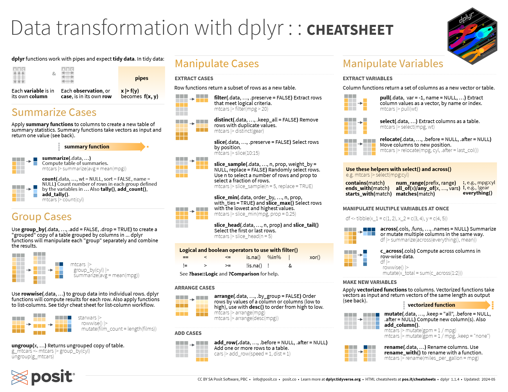
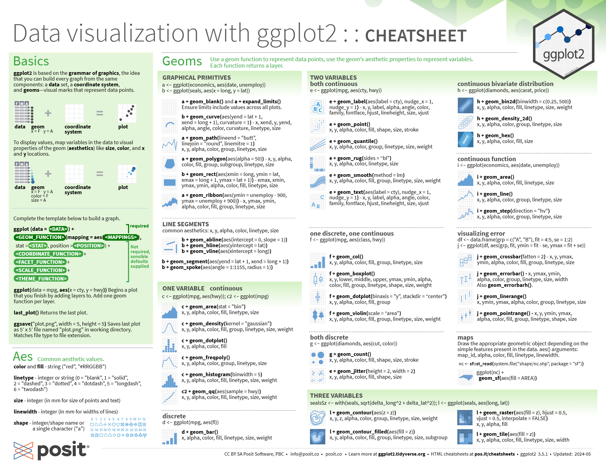
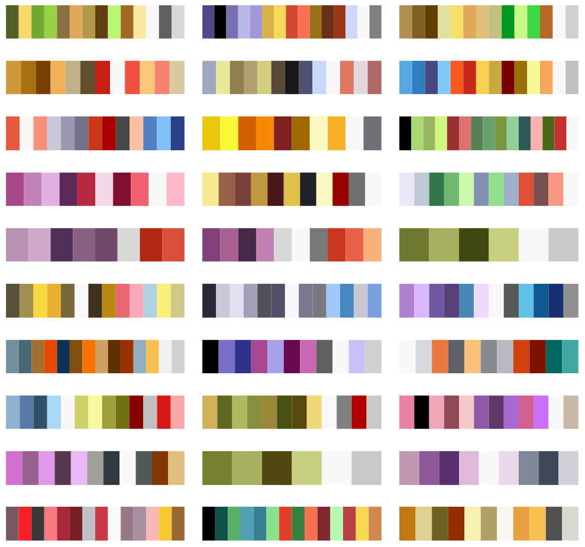
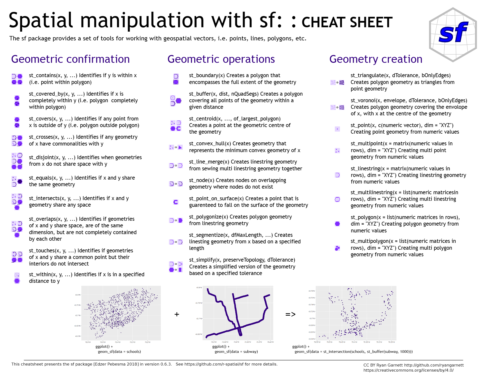

There are a variety of helpful packages which are briefly listed below, along with links to documentation, tutorials, cheatsheets, and other potentially helpful resources to help you learn how to use the packages. They are broadly organized into the following sections:
- Tidyverse
- Figures
- Fisheries Packages
- Geospatial Packages
- Miscellaneous
- Statistics
- Tables
- Telemetry
The table below briefly lists the contents of each section, but it is highly recommended you familiarize yourself with the gist of many of the packages listed.
Tidyverse
| Package | Section Link | Purpose |
|---|---|---|
| readr | link to readr | data import |
| tidyr | link to tidyr | data tidying |
| dplyr | link to dplyr | data manipulation |
| ggplot2 | link to ggplot2 | data visualization |
| purrr | link to purrr | functional programming |
| tibble | link to tibble | re-imaging dataframes |
| stringr | link to stringr | string manipulation |
| forcats | link to forcats | factor manipulation |
| lubridate | link to lubridate | dates and times |
The tidyverse (Wickham et al. 2019) is a set of packages that work in harmony because they share common data representations and API [Application Programming Interfaces] design. The tidyverse package is designed to make it easy to install and load core packages from the tidyverse in a single command.
If youd like to learn how to use the tidyverse effectively, the best place to start is R for Data Science (2e).Source: tidyverse
tidyverse is a collection of several key packages that together are extremely powerful at data manipulation and visualization. It is one of the most important packages to become familiar with in the field of fisheries.
Calling the tidyverse will also load the core tidyverse packages, including:
readr, for data import
tidyr, for data tidying
dplyr, for data manipulation
ggplot2, for data visualization
purrr, for functional programming
tibble, for modern re-imagining of data frames
stringr, for strings
forcats, for factors
lubridate, for dates/times
tidyverse article: the tidy tools manifesto
tidyverse article: welcome to the tidyverse
readr
The goal of readr (Wickham, Hester, and Bryan 2024) is to provide a fast and friendly way to read rectangular data from delimited files, such as comma-separated values (CSV) and tab-separated values (TSV). It is designed to parse many types of data found in the wild, while providing an informative problem report when parsing leads to unexpected results. If you are new to readr, the best place to start is the data import chapter in R for Data Science.Source: readr
readr allows you to read in various types of data files. Specifically, it is helpful when reading in comma separated values (CSV) files by using the following code:
read_csv(filename.csv)
Figure 1: readr cheatsheet
tidyr
The goal of tidyr (Wickham, Vaughan, and Girlich 2024) is to help you create tidy data. Tidy data is data where:
Tidy data describes a standard way of storing data that is used wherever possible throughout the tidyverse. If you ensure that your data is tidy, youll spend less time fighting with the tools and more time working on your analysis. Learn more about tidy data in vignette (tidy-data).
Each variable is a column; each column is a variable.
Each observation is a row; each row is an observation.
Each value is a cell; each cell is a single value.
Source: tidyr
tidyr article: tidy data (theory)
Figure 2: tidyr cheatsheet
dplyr
dplyr (Wickham et al. 2023) is a grammar of data manipulation, providing a consistent set of verbs that help you solve the most common data manipulation challenges:
mutate() adds new variables that are functions of existing variables
select() picks variables based on their names.
filter() picks cases based on their values.
summarise() reduces multiple values down to a single summary.
arrange() changes the ordering of the rows.
These all combine naturally with group_by() which allows you to perform any operation by group. You can learn more about them in vignette (dplyr). As well as these single-table verbs, dplyr also provides a variety of two-table verbs, which you can learn about in vignette (two-table).
If you are new to dplyr, the best place to start is the data transformation chapter in R for Data Science.Source: dplyr
dplyr article: two-table verbs

Figure 3: dplyr cheatsheet
ggplot2
ggplot2 (Wickham 2016) is a system for declaratively creating graphics, based on The Grammar of Graphics. You provide the data, tell ggplot2 how to map variables to aesthetics, what graphical primitives to use, and it takes care of the details.
If you are new to ggplot2 you are better off starting with a systematic introduction, rather than trying to learn from reading individual documentation pages. Currently, there are three good places to start:
The Data Visualization and Communication chapters in R for Data Science. R for Data Science is designed to give you a comprehensive introduction to the tidyverse, and these two chapters will get you up to speed with the essentials of ggplot2 as quickly as possible.
If youd like to take an online course, try Data Visualization in R With ggplot2 by Kara Woo.
If youd like to follow a webinar, try Plotting Anything with ggplot2 by Thomas Lin Pedersen.
If you want to dive into making common graphics as quickly as possible, I recommend the R Graphics Cookbook by Winston Chang. It provides a set of recipes to solve common graphics problems.
If youve mastered the basics and want to learn more, read ggplot2: Elegant Graphics for Data Analysis. It describes the theoretical underpinnings of ggplot2 and shows you how all the pieces fit together. This book helps you understand the theory that underpins ggplot2, and will help you create new types of graphics specifically tailored to your needs.Source: ggplot2
ggplot2 tutorial: aesthetic specifications
ggplot2 tutorial: faceting FAQ
ggplot2 tutorial: customizing FAQ
ggplot2 tutorial: annotation FAQ
ggplot2 tutorial: reordering FAQ
ggplot2 tutorial: barplots FAQ

Figure 4: ggplot2 cheatsheet
purrr
purrr (Wickham and Henry 2023) enhances Rs functional programming (FP) toolkit by providing a complete and consistent set of tools for working with functions and vectors. If youve never heard of FP before, the best place to start is the family of map() functions which allow you to replace many for loops with code that is both more succinct and easier to read. The best place to learn about the map() functions is the iteration chapter in R for Data Science.Source: purrr
purrr article: functional programming in other languages
Figure 5: purrr cheatsheet
tibble
A tibble (Mller and Wickham 2023), or tbl_df, is a modern reimagining of the data.frame, keeping what time has proven to be effective, and throwing out what is not. Tibbles are data.frames that are lazy and surly: they do less (i.e.they dont change variable names or types, and dont do partial matching) and complain more (e.g.when a variable does not exist). This forces you to confront problems earlier, typically leading to cleaner, more expressive code. Tibbles also have an enhanced print() method which makes them easier to use with large datasets containing complex objects.
If you are new to tibbles, the best place to start is the tibbles chapter in R for data science.Source: tibble
tibble article: getting started
tibble article: controlling display of numbers
tibble article: comparing display with data frames
stringr
Strings are not glamorous, high-profile components of R, but they do play a big role in many data cleaning and preparation tasks. The stringr (Wickham 2023b) package provides a cohesive set of functions designed to make working with strings as easy as possible. If youre not familiar with strings, the best place to start is the chapter on strings in R for Data Science.Source: stringr
stringr article: introduction to stringr
stringr article: regular expressions
Figure 6: stringr cheatsheet
forcats
R uses factors to handle categorical variables, variables that have a fixed and known set of possible values. Factors are also helpful for reordering character vectors to improve display. The goal of the forcats (Wickham 2023a) package is to provide a suite of tools that solve common problems with factors, including changing the order of levels or the values. Some examples include:
fct_reorder(): Reordering a factor by another variable.
fct_infreq(): Reordering a factor by the frequency of values.
fct_relevel(): Changing the order of a factor by hand.
fct_lump(): Collapsing the least/most frequent values of a factor into other.
You can learn more about each of these in vignette (forcats). If youre new to factors, the best place to start is the chapter on factors in R for Data Science.Source: forcats
Figure 7: forcats cheatsheet
lubridate
Date-time data can be frustrating to work with in R. R commands for date-times are generally unintuitive and change depending on the type of date-time object being used. Moreover, the methods we use with date-times must be robust to time zones, leap days, daylight savings times, and other time related quirks, and R lacks these capabilities in some situations. lubridate (Grolemund and Wickham 2011) makes it easier to do the things R does with date-times and possible to do the things R does not.
If you are new to lubridate, the best place to start is the date and times chapter in R for data science.Source: lubridate
lubridate article: do more with dates and times in R
Figure 8: lubridate cheatsheet
Figures
| Package | Section Link | Purpose |
|---|---|---|
| directlabels | link to directlabels | adjust label positions |
| esquisse | link to esquisse | shiny app to visualize data |
| fishualize | link to fishualize | fish shapes and color palettes |
| geomtextpath | link to geomtextpath | adjust label position and angles |
| gganimate | link to gganimate | create interactive plots |
| ggbreak | link to ggbreak | create axis breaks |
| ggbump | link to ggbump | create bump charts |
| ggeasy | link to ggeasy | makes ggplot2 more intuitive to use |
| ggforce | link to ggforce | force points to specific place on plot |
| gghighlight | link to gghighlight | highlight specific region of data |
| ggiraph | link to ggiraph | create dynamic graphs |
| ggpattern | link to ggpattern | fill regions with custom patterns |
| ggraph | link to ggraph | support relational data structures |
| ggrepel | link to ggrepel | removes overlaps in text labels |
| ggsankeyfier | link to ggsankeyfier | create sankey bump plots |
| ggstatsplot | link to ggstatsplot | add statistical labels directly to plots |
| ggtext | link to ggtext | adjust orientation of labels |
| ggthemes | link to ggthemes | enhance plot aesthetics |
| ggwordcloud | link to ggwordcloud | create custom wordclouds |
| hrbrthemes | link to hrbrthemes | choose fonts on figures |
| patchwork | link to patchwork | combine multiple plots |
| paletteer | link to paletteer | collection of 2759 palettes |
| pbapply | link to pbapply | add progress bars |
| plot3D | link to plot3D | tools for plotting 2D and 3D data |
| plotrix | link to plotrix | plotting, labeling, and scaling |
| shiny | link to shiny | create interactive web apps |
| showtext | link to showtext | customize font on figures |
ggplot2 is very powerful on its own. But it gets even better thanks to its extensions
Here is a curated a collection of the best ggplot2 extensions that enhance and elevate the core capabilities of ggplot2.
These extensions, seamlessly integrated with the foundational ggplot2 framework, unlock new visualization techniques, streamline intricate plotting tasks, and offer innovative ways to represent complex data.
Source: R Graph Gallery
directlabels
Direct Labels for Multicolor Plots
An extensible framework for automatically placing direct labels onto multicolor lattice or ggplot2 plots. Label positions are described using Positioning Methods which can be re-used across several different plots. There are heuristics for examining trellis and ggplot objects and inferring an appropriate Positioning Method.Source: directlabels
There are 2 major reasons why the directlabels (Hocking 2025) package is so useful:
Direct labeling is difficult to do by hand using standard base/lattice/ggplot2 plotting functions. The directlabels package allows you to define your direct labels in terms of a simple Positioning Method. This makes your code simpler, more readable, and less repetitive.
The functions that you will use to direct label a plot by hand depend on the plot package you use. The directlabels package offers a unified interface for both lattice and ggplot2 plots, thus greatly simplifying your code.Source: directlabels

Figure 9: directlabels example
directlabels article: motivation for direct labeling
directlabels article: smart labeling
directlabels article: advanced examples
esquisse
This addin [esquisse](Meyer and Perrier 2025) allows you to interactively explore your data by visualizing it with the ggplot2 package. It allows you to draw bar plots, curves, scatter plots, histograms, boxplot and sf objects, then export the graph or retrieve the code to reproduce the graph.Source: esquisse
esquisse article: getting started
fishualize
The fishualize (Schiettekatte, Brandl, and Casey 2022) package provides color scales for plotting in R based on natures most stunning and colorful organisms: teleost fishes (with a few chondrichthyan cameos). #TeamFish in its colorful glorySource: fishualize
Available Palettes
The package contains one scale per species, defined by five dominant colors. The number of fishualized species will expand over time. For a list of fish species that are currently available, run fish_palettes().
A visual overview of the color scales can be found here.
Source: fishualize
Figure 10: fishualize palette example
All Species Palettes (2/18/25)
Species by Order
Acanthuriformes
Acanthuridae
- Acanthurus chirurgus
- Acanthurus coeruleus
- Acanthurus leucosternon
- Acanthurus olivaceus
- Acanthurus sohal
- Acanthurus triostegus
- Naso lituratus
- Paracanthurus hepatus
- Zebrasoma velifer
- Zebrasoma xanthurum
Callanthiidae
- Callanthias australis
Chaetodontidae
- Chaetodon ephippium
- Chaetodon larvatus
- Chaetodon pelewensis
- Chaetodon sedentarius
- Prognathodes brasiliensis
- Prognathodes guyanensis
- Forcipiger longirostris
- Hemitaurichthys polylepis
Haemulidae
- Anisotremus virginicus
- Haemulon squamipinna
- Haemulon plumierii
Lutjanidae
- Lutjanus jocu
- Lutjanus sebae
Pomacanthidae
- Chaetodontoplus conspicillatus
- Centropyge loricula
- Holacanthus ciliaris
- Pomacanthus imperator
- Pomacanthus paru
- Pomacanthus xanthometopon
Priacanthidae
- Heteropriacanthus cruentatus
Zanclidae
- Zanclus cornutus
Anguilliformes
Muraenidae
- Gymnothorax funebris
Ophichthidae
- Myrichthys ocellatus
Atheriniformes
Atherinopsidae
- Atherinella brasilia
Blenniiformes
Blennidae
- Exallias brevis
- Hypleurochilus fissicornis
- Hypsoblennius invemar
- Parablennius marmoreus
- Parablennius pilicornis
Grammatidae
- Gramma brasiliensis
- Gramma loreto
Labrisomidae
- Labrisomus cricota
- Labrisomus nuchipinnis
Pomacentridae
- Chromis multilineata
- Chromis vanderbilti
- Hypsypops rubicundus
- Stegastes nigricans
- Stegastes partitus
- Stegastes variabilis
Pseudochromidae
- Pseudochromis aldabraensis
Callionymiformes
Callionymidae
- Synchiropus splendidus
Carangiformes
Carangidae
- Elagatis bipinnulata
Coryphaenidae
- Coryphaena hippurus
Pleuronectidae
- Pleuronectes platessa
Carcharhiniformes
Carcharhinidae
- Prionace glauca
Centrarchiformes
Centrarchidae
- Lepomis megalotis
- Micropterus punctulatus
Clupeiformes
Alosidae
- Alosa fallax
Dorosomatidae
- Harengula jaguana
- Lile piquitidnga
- Opisthonema oglinum
- Sardinella brasiliensis
Engraulidae
- Anchoviella lepidentostole
- Cetengraulis edentulus
- Lycengraulis grossidens
Cypriniformes
Cyprinidae
- Barbus barbus
Esociformes
Esocidae
- Esox lucius
Gadiformes
Gadidae
- Gadus morhua
Gobiiformes
Apogonidae
- Ostorhinchus angustatus
Gobiidae
- Bryaninops natans
- Elacatinus figaro
- Ostorhinchus angustatus
- Nemateleotris magnifica
- Neogobius melanostomus
- Trimma lantana
- Valenciennea strigata
Holocentriformes
Holocentridae
- Holocentrus adscensionis
- Sargocentron bullisi
Lampriformes
Lampridae
- Lampris guttatus
Lophiiformes
Antennariidae
- Antennarius commerson
- Antennarius multiocellatus
- Histiophryne psychedelica
Mugiliformes
Mugilidae
- Mugil liza
Myliobatiformes
Dasyatidae
- Taeniura lymma
Orectolobiformes
Ginglymostomatidae
- Ginglymostoma cirratum
Perciformes
Anthiadidae
- Pronotogrammus martinicensis
Hexagrammidae
- Hexagrammos lagocephalus
Labridae
- Bodianus pulchellus
- Bodianus rufus
- Cirrhilabrus solorensis
- Cirrhilabrus tonozukai
- Clepticus brasiliensis
- Clepticus parrae
- Coris gaimard
- Epibulus insidiator
- Gomphosus varius
- Halichoeres bivittatus
- Halichoeres brasiliensis
- Halichoeres dimidiatus
- Halichoeres garnoti
- Halichoeres radiatus
- Minilabrus striatus
- Pseudocheilinus tetrataenia
- Semicossyphus pulcher
- Stethojulis bandanensis
- Thalassoma bifasciatum
- Thalassoma hardwicke
- Thalassoma noronhanum
- Thalassoma pavo
- Xyrichtys novacula
Percidae
- Etheostoma barrenense
- Etheostoma spectabile
- Sander lucioperca
Scaridae
- Chlorurus microrhinos
- Chlorurus spilurus
- Scarus ghobban
- Scarus globiceps
- Scarus hoefleri
- Scarus quoyi
- Scarus tricolor
- Scarus zelindae
- Sparisoma frondosum_m
- Sparisoma tuyupiranga_f
- Sparisoma tuyupiranga_m
- Sparisoma viride
Scorpaenidae
- Pterois volitans
Serranidae
- Acanthisthius brasilianus
- Cephalopholis argus
- Cephalopholis fulva
- Dermatolepis inermis
- Epinephelus fasciatus
- Epinephelus lanceolatus
- Epinephelus marginatus
- Epinephelus striatus
- Hypoplectrus puella
- Mycteroperca bonaci
- Paralabrax clathratus
- Paranthias furcifer
- Serranus baldwini
- Serranus scriba
- Variola louti
Petromyzontiformes
Petromyzontidae
- Petromyzon marinus
Rhinopristiformes
Trygonorrhinidae
- Zapteryx brevirostris
Salmoniformes
Salmonidae
- Oncorhynchus gorbuscha
- Oncorhynchus keta
- Oncorhynchus kisutch
- Oncorhynchus mykiss
- Oncorhynchus nerka
- Oncorhynchus tshawytscha
- Salmo salar
- Salmo trutta
- Salvelinus fontinalis
Scombriformes
Scombridae
- Thunnus obesus
Siluriformes
Loricariidae
- Pareiorhaphis garbei
Pimelodidae
- Phractocephalus hemioliopterus
Syngnathiformes
Aulostomidae
- Aulostomus chinensis
Mullidae
- Parupeneus insularis
- Pseudupeneus maculatus
Syngnathidae
- Hippocampus reidi
Tetraodontiformes
Balistidae
- Balistapus undulatus
- Balistes vetula
- Balistoides conspicillum
- Rhinecanthus aculeatus
- Rhinecanthus assasi
- Melichthys vidua
- Odonus niger
Monacanthidae
- Alterus scriptus
- Cantherhines macrocerus
- Oxymonacanthus longirostris
Ostraciidae
- Acanthostracion polygonius
- Acanthostracion_polygonius_y
- Ostracion cubicus
- Ostracion whitleyi
Fish Shapes
fishualize 2.0 enables you to add fish silhouettes to a ggplot object with the function add_fishape(). To get an overview of all available silhouettes, run fishapes().
Source: fishualize
Figure 11: fishualize shape example
All Shapes (2/18/25)
Shapes by Order
Acanthuriformes
Acanthuridae
- Acanthurus nigricauda
- Ctenochaetus striatus
- Naso lituratus
- Naso unicornis
- Zebrasoma scopas
- Zebrasoma velifer
Chaetodontidae
- Chaetodon auriga
- Chaetodon ornatissimus
- Chaetodon plebius
- Chaetodon trifasciatus
- Chaetodon vagabundus
Ephippidae
- Platax teira
Haemulidae
- Plectorhinchus gibbosus
Lethrinidae:
- Lethrinus nebulosus
Lutjanidae
- Lutjanus gibbus
Acipenseriformes
Acipenseridae
- Acipenser fulvescens
Atheriniformes
Atherinopsidae
- Atherinella brasiliensis
Batrachoidiformes
Batrachoididae
- Opsanus beta
Beloniformes
Belonidae
- Belone belone
Blenniiformes
Blennidae
- Antennablennius adenensis
- Ecsenius pulcher
- Hypleurochilus pseudoaequipinnis
- Lupinoblennius nicholsi
- Bothus mancus
Chaenopsidae
- Acanthemblemaria spinosa
Clinidae
- Heteroclinus heptaeolus
Dactyloscopidae
- Gillellus uranidea
Gobiesocidae
- Acyrtus lanthanum
Grammatidae
- Lipogramma barrettorum
Labrisomidae
- Labrisomus guppyi
Callionymiformes
Callionymidae
- Callionymus bairdi
Characiformes
Characidae
- Salminus brasiliensis
Erythrinidae
- Hoplias malabaricus
Serrasalmidae
- Colossoma macropomum
- Piaractus brachypomus
Carangiformes
Carangidae
- Caranx melampygus
Carcharhiniformes
Carcharhinidae
- Triaenodon obesus
Ctenoluciidae
- Boulengerella cuvieri
Cynodontidae
- Hydrolycus armatus
Centrarchiformes
Centrarchidae
- Lepomis megalotis
Cheilodactylidae
- Cheilodactylus fuscus
Cirrhitidae
- Paracirrhites forsteri
Kyphosidae
- Kyphosus cinerascens
- Kyphosus vaigiensis
Cichliformes
Cichlidae
- Apistogramma hippolytae
- Cichla piquiti
- Cichla temensis
Clupeiformes
Alosidae
- Alosa fallax
Dorosomatidae
- Harengula clupeola
- Lile piquitinga
- Opisthonema oglinum
- Sardinella brasiliensis
Engraulidae
- Anchoviella lepidentostole
- Cetengraulis edentulus
- Lycengraulis grossidens
Spratelloididae
- Jenkinsia lamprotaenia
Cypriniformes
Cyprinidae
- Barbus barbus
- Danio rerio
Cyprinodontiformes
Fundulidae
- Fundulus grandis
Esociformes
Esocidae
- Esox lucius
Gobiiformes
Apogonidae
- Apogon binotatus
Gobiidae
- Coryogalops anomolus
- Eviota guttata
- Eviota melasma
- Fusigobius neophytus
- Gnatholepis cauerensis
- Gobiodon okinawae
- Hetereleotris vulgaris
- Priolepis hippoliti
- Risor ruber
Heterodontiformes
Heterodontidae
- Heterodontus portusjacksoni
Holocentriformes
Holocentridae
- Myripristis violacea
- Sargocentron spiniferum
Lamniformes
Alopiidae
- Alopias vulpinus
Myliobatiformes
Dasyatidae
- Bathytoshia brevicaudata
Mobulidae
- Mobula birostris
Ophidiiformes
Bythitidae
- Dinematichthys iluocoeteoides
Orectolobiformes
Ginglymostomatidae
- Nebrius ferrugineus
Perciformes
Channichthyidae
- Chaenocephalus aceratus
Cottidae
- Artedius harringtoni
Labridae
- Chlorurus microrhinus
- Chlorurus sordidus
- Coris gaimard
- Epibulus insidiator
- Gomphosus caeruleus
- Labroides bicolor
- Labroides dimidiatus
- Labroides pectoralis
- Scarus oviceps
- Scarus rivulatus
- Scarus schlegeli
Liparidae
- Careproctus staufferi
Scaridae
- Sparisoma cretense
Syngnathiformes
Aulostomidae
- Aulostomus chinensis
Tetraodontiformes
Balistidae
- Balistapus undulatus
- Odonus niger
Diodontidae
- Dicotylichthys punctulatus
Torpediniformes
Hypnidae
- Hypnos monopterygius
geomtextpath
Create curved text in ggplot2
The existing text-based geom layers in ggplot2 (geom_text and geom_label) are ideal for the majority of plots, since typically textual annotations are short, straight and in line with the axes. However, there are some occasions when it is useful to have text follow a curved path. This may be to create or recreate a specific visual effect, or it may be to label a circular / polar plot in a more natural way. Direct and automatic text labels that adhere to their associated line can also provide a neat alternative to legends, without the need for specifying exact label positions, and with a lower risk of overplotting.
Using geomtextpath (Cameron and van den Brand 2022), your text can follow any path, and will remain correctly spaced and angled, even if you change the size and aspect ratio of your plotting device. It does so without the need to redraw your plot each time, as shown in the introduction vignette.Source: geomtextpath
geomtextpath article: introduction
geomtextpath article: aesthetics, parameters, and scales
geomtextpath article: curved text in polar coordinates
geomtextpath article: gallery of examples
](images/geomtext.png)
Figure 12: geomtextpath example
gganimate
gganimate (Pedersen and Robinson 2024) extends the grammar of graphics as implemented by ggplot2 to include the description of animation. It does this by providing a range of new grammar classes that can be added to the plot object in order to customise how it should change with time.Source: gganimate
gganimate article: getting started
Figure 13: gganimate cheatsheet
ggbreak
Set Axis Break for ggplot2
ggbreak (Shuangbin Xu et al. 2021) - An implementation of scale functions for setting axis breaks of a gg plot.Source: ggbreak
Figure 14: ggbreak example
ggbump
Bump Chart and Sigmoid Curves
The R package ggbump (D. Sjoberg 2020) creates elegant bump charts in ggplot. Bump charts are good to use to plot ranking over time, or other examples when the path between two nodes have no statistical significance. Also includes functions to create custom smooth lines called sigmoid curves.Source: ggbump
**](images/ggbump.png)
Figure 15: ggbump example from documentation
ggeasy
ggeasy (Carroll, Schep, and Sidi 2024) Provides a series of aliases to commonly used but difficult to remember ggplot2 sequences.Source: ggeasy
ggeasy article: ggplot2 shortcuts
ggeasy article: tests and coverage
Figure 16: ggeasy example
ggforce
The aim of ggplot2 is to aid in visual data investigations. This focus has led to a lack of facilities for composing specialised plots. ggforce (Pedersen 2024a) aims to be a collection of mainly new stats and geoms that fills this gap. All additional functionality is aimed to come through the official extension system so using ggforce should be a stable experience.Source: ggforce
Figure 17: ggforce example
gghighlight
Highlight Lines and Points in ggplot2
The gghighlight (Yutani 2024) package in R is an extension of the ggplot2 package, designed to simplify the process of highlighting elements.Source: R Graph Gallery
gghighlight article: introduction

Figure 18: gghighlight example
ggiraph
Make ggplot2 dynamic and interactive
The ggiraph (Gohel and Skintzos 2024) package in R is an extension of the ggplot2 package, designed to simplify the process of creating interactive and dynamic graphs. Its an htmlwidget, which means its highly compatible with RMarkdown/Quarto document and Shiny application.Source: R Graph Gallery
ggpattern
[ggpattern] (FC, Davis, and ggplot2 authors 2025) Provides ggplot2 geoms filled with various patterns. Includes a patterned version of every ggplot2 geom that has a region that can be filled with a pattern. Provides a suite of ggplot2 aesthetics and scales for controlling pattern appearances. Supports over a dozen builtin patterns (every pattern implemented by gridpattern) as well as allowing custom user-defined patterns.Source: ggpattern
ggpattern article: creating the logo in R
ggpattern article: developing patterns
ggpattern article: geom gallery - array-based patterns
ggpattern article: geom gallery - geometry-based patterns
ggpattern article: parameters for geometry-based patterns
ggpattern article: animating patterns with gganimate
ggpattern article: patterns image and placeholder parameters and examples
ggpattern article: patterns gradient, ambient, and plasma patterns
ggpattern article: patterns circle, pch, regular_polygon, and rose parameters and examples
ggpattern article: patterns stripe, wave, crosshatch, and weave parameters and examples
ggpattern article: patterns magick and polygon_tiling parameters and examples
Figure 19: ggpattern example
ggraph
ggraph (Pedersen 2024b) is an extension of ggplot2 aimed at supporting relational data structures such as networks, graphs, and trees. While it builds upon the foundation of ggplot2 and its API it comes with its own self-contained set of geoms, facets, etc., as well as adding the concept of layouts to the grammarSource: ggraph
ggraph article: tidygraph interface
Figure 20: ggraph example
ggrepel
ggrepel (Slowikowski 2024) provides geoms for ggplot2 to repel overlapping text labels:
Text labels repel away from each other, away from data points, and away from edges of the plotting area.
- geom_text_repel()
- geom_label_repel()
Source: ggrepel
Figure 21: ggrepel example
ggsankeyfier
The goal of ggsankey (de Vries 2024) is to make beautiful sankey, alluvial and sankey bump plots in ggplot2Source: ggsankey
Figure 22: ggsankey example
ggstatsplot
ggplot2 Based Plots with Statistical Details
ggstatsplot (Patil 2021) is an extension of ggplot2 package for creating graphics with details from statistical tests included in the information-rich plots themselves. In a typical exploratory data analysis workflow, data visualization and statistical modeling are two different phases: visualization informs modeling, and modeling in its turn can suggest a different visualization method, and so on and so forth. The central idea of ggstatsplot is simple: combine these two phases into one in the form of graphics with statistical details, which makes data exploration simpler and faster.Source: ggstatsplot
Figure 23: ggstatsplot example
ggtext
The ggtext (Wilke and Wiernik 2025) package provides simple Markdown and HTML rendering for ggplot2. Under the hood, the package uses the gridtext package for the actual rendering, and consequently it is limited to the feature set provided by gridtext.Source: ggtext
ggtext article: plotting with markdown text
ggtext article: markdown theme elements
Figure 24: ggtext example
ggthemes
Some extra geoms, scales, and themes for ggplot. (Arnold 2024)Source: ggthemes
Figure 25: ggthemes example
ggwordcloud
ggwordcloud (Le Pennec and Slowikowski 2024) provides a word cloud text geom for ggplot2. The placement algorithm implemented in C++ is an hybrid between the one of wordcloud and the one of wordcloud2.js. The cloud can grow according to a shape and stay within a mask. The size aesthetic is used either to control the font size or the printed area of the words. ggwordcloud also supports arbitrary text rotation. The faceting scheme of ggplot2 can also be used. Two functions meant to be the equivalent of wordcloud and wordcloud2 are proposed. Last but not least you can use gridtext markdown/html syntax in the labelsSource: ggwordcloud
](images/ggwordcloud.png)
Figure 26: ggwordcloud example
hrbrthemes
The hrbrthemes (Rudis 2024) package in R serves as a valuable extension to the renowned ggplot2 package. Created by Bob Rudis, hrbrthemes offers a collection of opinionated themes and typography settings that aim to elevate the visual appeal of your ggplot2 plots. Whether you are a data scientist, a researcher, or anyone interested in data visualization, this package helps you create publication-quality plots with minimal effort.
The package is particularly useful for those who want to create publication-quality plots without spending too much time on customization. It provides a set of themes that are not only visually appealing but also adhere to good visualization practices.Source: R Graph Gallery
This is a very focused package that provides typography-centric themes and theme components for ggplot2.
The core theme: theme_ipsum (ipsum is Latin for precise) uses Arial Narrow which should be installed on practically any modern system, so its free-ish. This font is condensed, has solid default kerning pairs and geometric numbers. Thats what I consider the font trifecta must-have for charts. An additional quality for fonts for charts is that they have a diversity of weights. Arial Narrow (the one on most systems, anyway) does not have said diversity but this quality is not (IMO) a must have.Source: hrbrthemes
elevate your ggplot2 visuals with hrbrthemes
Figure 27: hrbrthemes example
patchwork
The ggplot2 package provides a strong API for sequentially building up a plot, but does not concern itself with composition of multiple plots. patchwork (Pedersen 2024c) is a package that expands the API to allow for arbitrarily complex composition of plots by, among others, providing mathematical operators for combining multiple plots.Source: patchwork
Use this package to modify figures made with ggplot2, to get a more aesthetically appealing figure.
patchwork tutorial: getting started
patchwork tutorial: plot Assembly
patchwork tutorial: controlling Layouts
patchwork tutorial: adding annotation and style
patchwork tutorial: alignment across multiple Pages
](images/patchwork.png)
Figure 28: patchwork example
paletteer
Comprehensive Collection of Color Palettes
The choices of color palettes in R can be quite overwhelming with palettes spread over many packages with many different APIs. paletteer (Hvitfeldt 2021) aims to collect all color palettes across the R ecosystem under the same package with a streamlined API.Source: paletteer
Palettes
The palettes are divided into 2 groups; discrete and continuous. For discrete palette you have the choice between the fixed width palettes and dynamic palettes. Most common of the two are the fixed width palettes which have a set amount of colors which doesnt change when the number of colors requested vary like the following palettes:

on the other hand we have the dynamic palettes where the colors of the palette depend on the number of colors you need like the green.pal palette from the cartography package:
Lastly we have the continuous palettes which provides as many colors as you need for a smooth transition of color:

This package includes 2759 palettes from 75 different packages and information about these can be found in the following data.frames: palettes_c_names, palettes_d_names and palettes_dynamic_names. Additionally this github repo showcases all the palettes included in the package and more.Source: paletteer
Palette Explorer
A web application is available to quickly explore the available palettes.Source: paletteer
paletteer is one of my favorite R packages. It consolidates all available color palettes in the R ecosystem into a single package. This means you can access over 2500 palettes with just one line of code.
The palettes are categorized as continuous or qualitative. The R Graph Gallery has a dedicated page to help you get started.
To use paletteer, the basic syntax looks like this:
This webpage defaults to a palette called Acadia. If you click the name it opens to a dropdown where you can select other palettes, and then see examples of graphics made using that palette to test it before you take time building your own. There is also a dropdown that allows you to view the palettes with colorblind filters on to ensure that the palette will be legible.
Available Palettes
Courtesy of R Color Palettes
ButterflyColors
Figure 29: ButterflyColors
DresdenColor
Figure 30: DresdenColor
IslamicArt
Figure 31: IslamicArt
LaCroixColoR
Figure 32: LaCroixColoR
Manu
Figure 33: Manu
MapPalettes
Figure 34: MapPalettes
MexBrewer
Figure 36: MexBrewer
NatParksPalettes
Figure 38: NatParksPalettes
NineteenEightyR
Figure 39: NineteenEightyR
PNWColors
Figure 40: PNWColors
](images/PrettyCols2.png)
RSkittleBrewer
Figure 43: RSkittleBrewer
Redmonder
Figure 44: Redmonder
awtools
Figure 45: awtools
basetheme
Figure 46: basetheme
colorBlindness
Figure 50: colorBlindness
colorblindr
Figure 51: colorblindr
dichromat
Figure 52: dichromat
dutchmasters
Figure 53: dutchmasters
feathers
Figure 54: feathers

futurevisions
Figure 56: futurevisions
ggpomological
Figure 57: ggpomological
ggthemr
Figure 61: ggthemr
ghibli
Figure 62: ghibli
grDevices
Figure 63: grDevices
impressionist.colors
Figure 64: impressionist.colors
jcolors
Figure 65: jcolors
khroma
Figure 66: khroma
ltc
Figure 68: ltc
miscpalettes
Figure 69: miscpalettes
musculusColors
Figure 70: musculusColors
nationalparkcolors
Figure 71: nationalparkcolors

nord
Figure 73: nord
ochRe
Figure 74: ochRe
palettesForR
Figure 75: palettesForR
palettetown
An R package providing pokemon colour palettes.
This package is very much inspired by pokepalettes.Source: palettetown

Figure 76: palettetown
pals
Figure 77: pals
peRReo
Figure 78: peRReo

rockthemes
Figure 80: rockthemes
rtist
Figure 81: rtist
severance
Figure 82: severance
soilpalettes
Figure 83: soilpalettes
suffrager
Figure 84: suffrager
tayloRswift
Figure 85: tayloRswift
tidyquant
Figure 86: tidyquant
unikn
Figure 89: unikn
vangogh
Figure 90: vangogh
vapeplot
Figure 91: vapeplot
vapoRwave
Figure 92: vapoRwave
waRhol
Figure 93: waRhol
werpals
Figure 94: werpals
wesanderson
](images/wesanderson.png)
Figure 95: wesanderson
yarrr
Figure 96: yarrr
pbapply
A lightweight package that adds progress bar to vectorized R functions (apply). The implementation can easily be added to functions where showing the progress is useful (e.g.bootstrap). The type and style of the progress bar (with percentages or remaining time) can be set through options. The package supports several parallel processing backends, such as snow-type clusters, multicore-type forking, and future.Source: pbapply
Prior to using the pbapply (Solymos and Zawadzki 2023) package, it is important you learn how to vectorize/parallelize your data. The author wrote a complementary step-by-step guide on how to do so titled the road to progress.
pbapply article: how to get started
pbapply article: how to add pbapply to a package
plot3D
Plotting Multi-Dimensional Data
(Soetaert 2024) Functions for viewing 2-D and 3-D data, including perspective plots, slice plots, surface plots, scatter plots, etc. Includes data sets from oceanography.Source: plot3D
Figure 97: plot3D example
plotrix
plotrix (J 2006) is an R package that provides many plotting, labeling, and axis & color scaling functions.
Figure 98: plotrix examples
shiny
Web Application Framework for R
(Chang et al. 2024) Makes it incredibly easy to build interactive web applications with R. Automatic reactive binding between inputs and outputs and extensive prebuilt widgets make it possible to build beautiful, responsive, and powerful applications with minimal effort.Source: shiny
Mastering shiny: build interactive apps, reports, & dashboards powered by R by Hadley Wickham
Figure 99: shiny cheatsheet
showtext
Using Fonts More Easily in R Graphs
(Qiu 2024) Making it easy to use various types of fonts (TrueType, OpenType, Type 1, web fonts, etc.) in R graphs, and supporting most output formats of R graphics including PNG, PDF and SVG. Text glyphs will be converted into polygons or raster images, hence after the plot has been created, it no longer relies on the font files. No external software such as Ghostscript is needed to use this package.Source: showtext
Figure 100: showtext example
Fisheries Packages
| Package | Section Link | Purpose |
|---|---|---|
| BayesGrowth | link to BayesGrowth | length-at-age growth curves |
| CatDyn | link to CatDyn | stock assessment by catch models |
| FESta | link to FESta | fishing effort standardization |
| fishMod | link to fishMod | fits models to CPUE data |
| FSA | link to FSA | Fisheries Stock Assessment |
| ggFishPlots | link to ggFishPlots | visualize life history parameters |
| RFishBC | link to RFishBC | back-calculation of fish length |
BayesGrowth
Estimate fish growth using MCMC analysis
BayesGrowth (Smart 2023) (Smart and Grammer 2021) combines length-at-age modelling for fisheries with MCMC implemented using Stan and the rstan package. Growth modelling using models such as the von Bertalanffy growth model involves three parameters: L, k and either L0 or t0. Two of these parameters: L0 and L have direct biological meaning as the size-at-birth and maximum length, respectively. This package provides the tools to run an MCMC model with these two parameters treated as size-at-birth and maximum length using a rstan model with a No U-Turn Sampling (NUTS) algorithm. This MCMC model is pre-specified and built into wrapper functions.
The user can therefore run an MCMC growth model using knowledge of species length-at-birth and maximum size as priors.Source: BayesGrowth
CatDyn
Fishery Stock Assessment by Catch Dynamics Models
Based on fishery Catch Dynamics instead of fish Population Dynamics (hence CatDyn) (Roa-Ureta 2011) (Roa-Ureta 2015) (Roa-Ureta et al. 2015) (Lin et al. 2017) and using high-frequency or medium-frequency catch in biomass or numbers, fishing nominal effort, and mean fish body weight by time step, from one or two fishing fleets, estimate stock abundance, natural mortality rate, and fishing operational parameters. It includes methods for data organization, plotting standard exploratory and analytical plots, predictions, for 100 types of models of increasing complexity, and 72 likelihood models for the data.Source: CatDyn
FESta
Fishing Effort Standardisation (Varghese, T V, and J 2020)
Original idea was presented in the reference paper. Varghese et al.(2020, 74(1):35-42) Bayesian State-space Implementation of Schaefer Production Model for Assessment of Stock Status for Multi-gear Fishery. Marine fisheries governance and management practices are very essential to ensure the sustainability of the marine resources. A widely accepted resource management strategy towards this is to derive sustainable fish harvest levels based on the status of marine fish stock. Various fish stock assessment models that describe the biomass dynamics using time series data on fish catch and fishing effort are generally used for this purpose. In the scenario of complex multi-species marine fishery in which different species are caught by a number of fishing gears and each gear harvests a number of species make it difficult to obtain the fishing effort corresponding to each fish species. Since the capacity of the gears varies, the effort made to catch a resource cannot be considered as the sum of efforts expended by different fishing gears. This necessitates standardisation of fishing effort in unit base.Source: FESta
fishMod
Fits Poisson-Sum-of-Gammas GLMs, Tweedie GLMs, and Delta Log-Normal Models
(Foster 2024) Fits models to catch and effort data. Single-species models are
delta log-normal
Tweedie, or
Poisson-gamma (G)LMs.
Source: fishMod
FSA
Fisheries Stock Assessment
The FSA (Ogle et al. 2025) package provides R functions to conduct typical introductory fisheries analyses. Example analyses that use FSA can be found in the Introductory Fisheries Analyses with R book (see note below) and on the fishR website.Source: FSA
ggFishPlots
Visualise and calculate life history parameters for fisheries science
At the time of writing, the package (Vihtakari 2024) produces four kinds of plots: growth curves, maturity plots, length-weight relationships, and catch curves. Each function returns a ggplot2 plot and the estimated parameters as a text string that can be used in Rmarkdown and Shiny applications as well as a data frame for further use of the parameters. The elements are returned as a list. The package contains example data to illustrate the functionality.Source: ggFishPlots
RFishBC
Back-Calculation of Fish Length
Helps fisheries scientists collect measurements from calcified structures and back-calculate estimated lengths at previous ages using standard procedures and models. This is intended to replace much of the functionality provided by the now out-dated fishBC software (https://fisheries.org/bookstore/all-titles/software/70317/). (Ogle 2023)Source: RFishBC
RFishBC article: short introduction to back-calculation
RFishBC article: visualize points selected on a calcified structure
RFishBC article: compute back-calculated lengths
RFishBC article: suggested workflow for back-calculation
Geospatial Packages
| Package | Section Link | Purpose |
|---|---|---|
| leaflet | link to leaflet | create interactive maps |
| maps/mapdata | link to maps/mapdata | create maps with overlaid rivers |
| rayshader | link to rayshader | create 2D and 3D maps |
| sf | link to sf | work with spatial data |
| tmap | link to tmap | create thematic maps |
leaflet
Leaflet is one of the most popular open-source JavaScript libraries for interactive maps. Its used by websites ranging from The New York Times and The Washington Post to GitHub and Flickr, as well as GIS specialists like OpenStreetMap, Mapbox, and CartoDB.
This R package (Cheng et al. 2024) makes it easy to integrate and control Leaflet maps in R.Source: leaflet
leaflet article: the map widget
leaflet article: popups and labels
maps/mapdata
Display of maps. Projection code and larger maps are in separate packages (mapproj and mapdata).Source: maps
maps (Richard A. Becker, Ray Brownrigg. Enhancements by Thomas P Minka, and Deckmyn. 2024) includes maps of the USA, Canada, and other countries with various add-ons available (such as cities, counties, etc.) and also a database of lakes around the world.
mapdata (Richard A. Becker and Ray Brownrigg. 2022) is an add-on package that provides information for additional countries and also rivers.
Figure 101: maps
use the maps, mapdata and oz packages to get most common boundaries
rayshader
rayshader (Morgan-Wall 2025) is an open source package for producing 2D and 3D data visualizations in R. rayshader uses elevation data in a base R matrix and a combination of raytracing, hillshading algorithms, and overlays to generate stunning 2D and 3D maps. In addition to maps, rayshader also allows the user to translate ggplot2 objects into beautiful 3D data visualizations.
The models can be rotated and examined interactively or the camera movement can be scripted to create animations. Scenes can also be rendered using a high-quality pathtracer, rayrender. The user can also create a cinematic depth of field post-processing effect to direct the users focus to important regions in the figure. The 3D models can also be exported to a 3D-printable format with a built-in STL export function, and can be exported to an OBJ file.Source: rayshader
](images/rayshader.png)
Figure 102: rayshader example
sf
Package sf (Pebesma and Bivand 2023) :
represents simple features as records in a data.frame or tibble with a geometry list-column
represents natively in R all 17 simple feature types for all dimensions (XY, XYZ, XYM, XYZM)
interfaces to GEOS for geometrical operations on projected coordinates, and (through R package s2) to s2geometry for geometrical operations on ellipsoidal coordinates
interfaces to GDAL, supporting all driver options, Date and POSIXct and list-columns
interfaces to PRJ for coordinate reference system conversion and transformation >
uses well-known-binary serialisations written in C++/Rcpp for fast I/O with GDAL and GEOS
reads from and writes to spatial databases such as PostGIS using DBI is extended by
lwgeom for selected liblwgeom/PostGIS functions
stars for raster data, and raster or vector data cubes (spatial time series)
sfnetworks for geospatial network data
Source: sf
sf article: simple features for R
sf article: reading, writing, and converting simple Features
sf article: manipulating simple feature geometries
sf article: manipulating simple features
sf article: plotting simple figures
sf article: spherical geometry in sf using s2geometry

Figure 103: sf cheatsheet
tmap
thematic maps in R
tmap (Tennekes 2018) is an R package for drawing thematic maps. The API is based on A Layered Grammar of Graphics and resembles the syntax of ggplot2, a popular R-library for drawing charts.Source: tmap
Figure 104: tmap
tmap article: foundations - grammar of graphics
tmap article: foundations - map projections (crs)
tmap article: visual variables
tmap article: tmap versus mapsf
tmap article: positioning components
tmap article: margins and aspect ratio
Miscellaneous
| Package | Section Link | Purpose |
|---|---|---|
| EchoviewR | link to EchoviewR | Echoview and R interface |
| rticles | link to rticles | format articles for publication |
| tinytex | link to tinytex | enables LaTeX coding in R |
EchoviewR
EchoviewR (Harrison et al. 2015) is a free and extensive software package that acts as an interface between R and Echoview, developed by the Australian Antarctic Division.Source: Echoview
EchoviewR article: getting started
EchoviewR article: basic functionality
EchoviewR article: broadband single targets
rticles
The rticles (Allaire et al. 2024) package provides a suite of custom R Markdown LaTeX formats and templates for various formats. Most of the templates are provided and maintained by the community, and anyone can contribute a new template.Source: rticles
This package is helpful in formatting articles for publication in scientific journals without having to manually reformat all your citations. In particular it may be helpful if you want to publish in PLOS, PNAS, or PeerJ but a full list of journals available is listed below.
Usage
To use rticles from RStudio, you can access the templates through File -> New File -> R Markdown. This will open the dialog box where you can select from one of the available templates
You can also get the list of available journal names with rticles::journals().
LaTeX templates are used to ensure that documents conform precisely to submission standards.
ACM ACS AEA AGU AJS AMQ AMS ARXIV ASA Bioinf. Biomet. Copernic. CTEX Elsevier frontiers glossa IEEE IMS Informs IOP ISBA JASA JEDM JOSS JSS LIPICS LNCS MDPI MNRAS OUP_v0 OUP_v1 PeerJ PIHPH PLOS PNAS R Journal RSOS RSS SAGE SIM Springer TF TRB Wellcom.
rticles article: available templates
rticles article: examples of journal templates
- step-by-step guide to address errors if your desired template doesnt knit properly.
tinytex
tinytex (Xie 2024) (Xie 2019) is a custom LaTeX distribution based on TeX Live that is small in size, but functions well in most cases, especially for R users. If you run into the problem of missing LaTeX packages, it should be super clear to you what you need to do (in fact, R users wont need to do anything). You only install LaTeX packages you actually need.Source: TinyTeX
This package allows .Rmd files to be exported as PDF documents. It is also necessary if you want to use the rticles package to format articles for publication.
tinytex article: compile LaTeX documents
Statistics
AICcmodavg
Model Selection and Multimodel Inference Based on (Q)AIC(c)
(Mazerolle 2023) Functions to implement model selection and multimodel inference based on Akaikes information criterion (AIC) and the second-order AIC (AICc), as well as their quasi-likelihood counterparts (QAIC, QAICc) from various model object classes. The package implements classic model averaging for a given parameter of interest or predicted values, as well as a shrinkage version of model averaging parameter estimates or effect sizes. The package includes diagnostics and goodness-of-fit statistics for certain model types including those of unmarkedFit classes estimating demographic parameters after accounting for imperfect detection probabilities. Some functions also allow the creation of model selection tables for Bayesian models of the bugs, rjags, and jagsUI classes. Functions also implement model selection using BIC. Objects following model selection and multimodel inference can be formatted to LaTeX using xtable methods included in the package.Source: AICcmodavg
vignette: model selection and multimodal inference using the AICmodavg package
bbmle
Tools for General Maximum Likelihood Estimation
(Bolker and R Development Core Team 2025) Methods and functions for fitting maximum likelihood models in R. This package modifies and extends the mle classes in the stats4 package.Source: bbmle
bbmle article: dealing with quasi models in R
bbmle article: maximum likelihood estimation and analysis with the bbmle package
DHARMa
Residual Diagnostics for Hierarchical (Multi-Level / Mixed) Regression Models
The DHARMa (Hartig 2024) package uses a simulation-based approach to create readily interpretable scaled (quantile) residuals for fitted (generalized) linear mixed models. Currently supported are linear and generalized linear (mixed) models from lme4 (classes lmerMod, glmerMod), glmmTMB, GLMMadaptive, and spaMM; phylogenetic linear models from phylolm (classes phylolm and phyloglm); generalized additive models (gam from mgcv); glm (including negbin from MASS, but excluding quasi-distributions) and lm model classes. Moreover, externally created simulations, e.g.posterior predictive simulations from Bayesian software such as JAGS, STAN, or BUGS can be processed as well. The resulting residuals are standardized to values between 0 and 1 and can be interpreted as intuitively as residuals from a linear regression. The package also provides a number of plot and test functions for typical model misspecification problems, such as over/underdispersion, zero-inflation, and residual spatial, phylogenetic and temporal autocorrelation.Source: DHARMa
DHARMa article: residual diagnositics for hierarchical (multi-level/mixed) regression models
emmeans
Estimated Marginal Means, aka Least-Squares Means
Obtain estimated marginal means (EMMs) (Lenth 2024) for many linear, generalized linear, and mixed models. Compute contrasts or linear functions of EMMs, trends, and comparisons of slopes. Plots and other displays. Least-squares means are discussed, and the term estimated marginal means is suggested, in Searle, Speed, and Milliken (1980) Population marginal means in the linear model: An alternative to least squares means, The American Statistician 34(4), 216-221 doi:10.1080/00031305.1980.10483031.Source: emmeans
emmeans article: quick start guide
emmeans article: basics of estimated marginal means
emmeans article: comparisons and contrasts
emmeans article: confidence intervals and tests
emmeans index of vignette topics
gamlss
Generalized Additive Models for Location Scale and Shape
01. What is GAMLSS (R. A. Rigby and D. M. Stasinopoulos 2005)
GAMLSS are distributional regression models. In classical regression models, the explanatory variables, X, affect the expected value of the response y, X -> E(y). In a distributional regression the Xs effects all parts of the distribution of y, X -> D(y). The GAMLSS models are appropriate when the focus of the study is not only shifts in the mean (or location) of the distribution for y but possibly other parts like the variance (volatility), the skewness, the kurtosis (heavy tails), the quantiles. All aspects of the the distribution of the response can be modelled as functions of the explanatory variables.
03. What distributions can be used within GAMLSS
GAMLSS provide over 100 continuous, discrete and mixed distributions for modelling the response variable. Truncated, censored (interval response), log and logit transformed and finite mixture versions of these distributions can be also used. >Source: gamlss
gamlss: generalized additive models for location scale and shape
gamlss R packages reference card
glmmTMB
Fitting Generalized Linear Mixed Models (GLMMs) using Template Model Builder (TMB)
glmmTMB (Brooks et al. 2017) is an R package built on the Template Model Builder automatic differentiation engine, for fitting generalized linear mixed models and extensions.Source: glmmTMB
Response Distributions
- Gaussian
- binomial
- beta-binomial
- Poisson
- negative binomial (NB1 and NB2 parameterizations)
- Conway-Maxwell-Poisson
- generalized Poisson
- Gamma
- Beta
- Tweedie
- zero-truncated Poisson
Usage
In order to use glmmTMB effectively you should already be reasonably familiar with generalized linear mixed models (GLMMs), which in turn requires familiarity with (i) generalized linear models (e.g.the special cases of logistic, binomial, and Poisson regression) and (ii) modern mixed models (those working via maximization of the marginal likelihood rather than by manipulating sums of squares). Bolker et al.(2009) and Bolker (2015) are reasonable starting points in this area (especially geared to biologists and less-technical readers), as are Zuur et al.(2009), Millar (2011), and Zuur et al.(2013).
In order to fit a model in glmmTMB you need to:
specify a model for the conditional effects, in the standard R (Wilkinson-Rogers) formula notation (see ?formula or Section 11.1 of the Introduction to R. Formulae can also include offsets.)
specify a model for the random effects, in the notation that is common to the nlme and lme4 packages. Random effects are specified as x|g, where x is an effect and g is a grouping factor (which must be a factor variable, or a nesting of/interaction among factor variables).
choose the error distribution by specifying the family (family argument). In general, you can specify the function (binomial, gaussian, poisson, Gamma from base R, or one of the options listed at family glmmTMB [nbinom2, beta family(), betabinomial, ])).
choose the error distribution by specifying the family (family argument).
Source: glmmTMB
glmmTMB article: GLMM Worked Examples
- tutorial with examples and a breakdown of what the code is doing.
lme4
Linear Mixed-Effects Models using Eigen and S4
Fit linear and generalized linear mixed-effects models. The models and their components are represented using S4 classes and methods. The core computational algorithms are implemented using the Eigen C++ library for numerical linear algebra and RcppEigen glue. (Bates et al. 2015)Source: lme4
lme4 article: computational methods for mixed models
lme4 article: fitting linear mixed-effects models using lme4
lme4 article: lme4 performance tips
Tables
| Package | Section Link | Purpose |
|---|---|---|
| DT | link to DT | sort and filter data tables |
| gtsummary | link to gtsummary | analytical and summary tables |
DT
An R interface to the DataTables library
The R package DT (Xie, Cheng, and Tan 2024) provides an R interface to the JavaScript library DataTables. R data objects (matrices or data frames) can be displayed as tables on HTML pages, and DataTables provides filtering, pagination, sorting, and many other features in the tables.Source: DT
DT citation
Xie Y, Cheng J, Tan X (2024). DT: A Wrapper of the JavaScript Library DataTables. R package version 0.33, https://CRAN.R-project.org/package=DT.
BibTeX entry
gtsummary
The gtsummary (D. D. Sjoberg et al. 2021) package provides an elegant and flexible way to create publication-ready analytical and summary tables using the R programming language. The gtsummary package summarizes data sets, regression models, and more, using sensible defaults with highly customizable capabilities.Source: gtsummary
](images/gtsummary.png)
Figure 105: gtsummary
gtsummary article: gtsummary + Quarto/Rmarkdown
Figure 106: gtsummary cheatsheet
Telemetry
| Package | Section Link | Purpose |
|---|---|---|
| actel | link to actel | acoustic telemetry package |
| adehabitatHR | link to adehabitatHR | home range estimation |
| adehabitatHS | link to adehabitatHS | habitat selection analysis |
| adehabitatLT | link to adehabitatLT | animal movement analysis |
| adehabitatMA | link to adehabitatMA | raster map manipulation |
| amt | link to amt | animal movement analysis |
| m2b | link to m2b | behavior prediction |
| sftrack | link to sftrack | tracking and movement data |
| SiMRiv | link to SiMRiv | simulating movements in Rivers |
| wildlifeDI | link to wildlifeDI | dynamic interaction indices |
actel
Designed for studies where animals tagged with acoustic tags are expected to move through receiver arrays. Combines the advantages of automatic sorting and checking of animal movements with the possibility for user intervention on tags that deviate from expected behaviour. (Flavio and Baktoft 2021)Source: actel
](images/actel.png)
Figure 107: actel
adehabitatHR
Home Range Estimation
A collection of tools for the estimation of animals home range. (Calenge 2024a)Source: adehabitatHR
Figure 108: adehabitatHR example
adehabitatHR article: home range estimation
adehabitatHS
Analysis of Habitat Selection by Animals
A collection of tools for the analysis of habitat selection. (Calenge 2024b)Source: adehabitatHS
Figure 109: adehabitatHS example
adehabitatHS article: exploratory analysis of the habitat selection by the wildlife in R
adehabitatLT
Analysis of Animal Movements
A collection of tools for the analysis of animal movements. (Calenge 2024c)Source: adehabitatLT
adehabitatLT article: help index
Analysis of Animal Movements in R: the adehabitatLT package
adehabitatMA
Tools to Deal with Raster Maps
A collection of tools to deal with raster maps. (Calenge 2024d)Source: adehabitatMA
adehabitatMA article: tools for the analysis of mapped data
amt
Animal Movement Tools
Manage and analyze animal movement data. The functionality of amt (Signer, Fieberg, and Avgar 2019) includes methods to calculate home ranges, track statistics (e.g.step lengths, speed, or turning angles), prepare data for fitting habitat selection analyses, and simulation of space-use from fitted step-selection functions.Source: amt
](images/amt.png)
Figure 110: amt example
amt article: calculating home-range overlaps with amt
amt article: used habitat calibration plots
m2b
Movement to Behaviour Inference using Random Forest
Prediction of behaviour from movement characteristics using observation and random forest for the analyses of movement data in ecology. From movement information (speed, bearing) the model predicts the observed behaviour (movement, foraging) using random forest. The model can then extrapolate behavioural information to movement data without direct observation of behaviours. The specificity of this method relies on the derivation of multiple predictor variables from the movement data over a range of temporal windows. This procedure allows to capture as much information as possible on the changes and variations of movement and ensures the use of the random forest algorithm to its best capacity. The method is very generic, applicable to any set of data providing movement data together with observation of behaviour. (Dubroca and Thiebault 2017)Source: m2b
sftrack
sftrack (Boone, Joo, and Basille 2023) provides modern classes for tracking and movement data, relying on sf spatial infrastructure. Tracking data are made of tracks, i.e.series of locations with at least 2-dimensional spatial coordinates (x,y), a time index (t), and individual identification (id) of the object being monitored; movement data are made of trajectories, i.e.the line representation of the path, composed by steps (the straight-line segments connecting successive locations). sftrack is designed to handle movement of both living organisms and inanimate objects.Source: sftrack
](images/sftrack.png)
Figure 111: sftrack example
sftrack article: reading in an sftrack
sftrack article: structure of sftrack/sftraj objects
sftrack article: fantastic groups and how to use them
sftrack article: getting spatial with sftrack
SiMRiv
Simulating Multistate Movements in River/Heterogeneous Landscapes
Provides functions to generate and analyze spatially-explicit individual-based multistate movements in rivers, heterogeneous and homogeneous spaces. This is done by incorporating landscape bias on local behaviour, based on resistance rasters. Although originally conceived and designed to simulate trajectories of species constrained to linear habitats/dendritic ecological networks (e.g.river networks), the simulation algorithm is built to be highly flexible and can be applied to any (aquatic, semi-aquatic or terrestrial) organism, independently on the landscape in which it moves. Thus, the user will be able to use the package to simulate movements either in homogeneous landscapes, heterogeneous landscapes (e.g.semi-aquatic animal moving mainly along rivers but also using the matrix), or even in highly contrasted landscapes (e.g.fish in a river network). The algorithm and its input parameters are the same for all cases, so that results are comparable. Simulated trajectories can then be used as mechanistic null models (Potts & Lewis 2014, doi:10.1098/rspb.2014.0231) to test a variety of Movement Ecology hypotheses (Nathan et al.2008, doi:10.1073/pnas.0800375105), including landscape effects (e.g.resources, infrastructures) on animal movement and species site fidelity, or for predictive purposes (e.g.road mortality risk, dispersal/connectivity). The package should be relevant to explore a broad spectrum of ecological phenomena, such as those at the interface of animal behaviour, management, landscape and movement ecology, disease and invasive species spread, and population dynamics. (Quaglietta and Porto 2024)Source: SiMRiv
Figure 112: SiMRiv example
SiMRiv article: usage of the SiMRiv package
wildlifeDI
Calculate Indices of Dynamic Interaction for Wildlife Tracking Data
Dynamic interaction refers to spatial-temporal associations in the movements of two (or more) animals. This package provides tools for calculating a suite of indices used for quantifying dynamic interaction with wildlife telemetry data. For more information on each of the methods employed see the references within. The package (as of version >= 0.3) also has new tools for automating contact analysis in large tracking datasets. The package (as of version 1.0) uses the move2 class of objects for working with tracking dataset. (Long et al. 2014) (Long et al. 2022)Source: wildlifeDI
wildlifeDI article: contact analysis workflow
wildlifeDI article: analysis of dynamic interaction patterns in wildlife tracking data